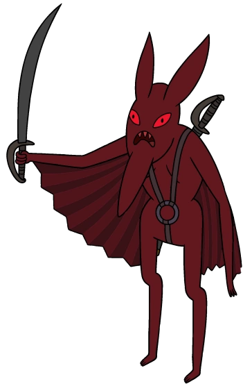

Você teve uma travessia tranquila e até pode aproveitar
um pouco da "bela" paisagem que te cerca.
Você caminha em direção às escadas.
"Alto lá. Documento de permissão de passagem por favor"
O que você vai fazer agora?

1 - Diz que é filha do Rei da Noitosfera em tom debochado para que ele te deixe passar.
2 - Pede por favorzinho?
3 - Acha que é hora de um pouco de pancadaria.